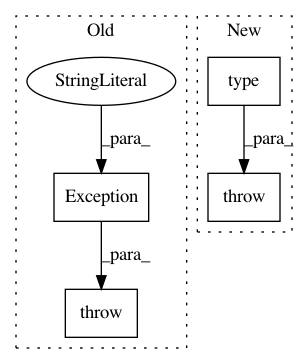

a05ea9b6422bf13fdff4eed2e1373eb99c2db30d,snips_nlu_dataset/intent_dataset.py,SM,__getitem__,#SM#Any#,301
Before Change
start = current + key.start if key.start else current
return self.input[slice(start, key.stop, key.step)]
else:
raise Exception("Bad key")
def capture_text(state):
next_pos = state.find("[")
After Change
start = current + key.start if key.start else current
return self.input[slice(start, key.stop, key.step)]
else:
raise TypeError("Bad key type: %s" % type(key))
def capture_text(state):
next_pos = state.find("[")
In pattern: SUPERPATTERN
Frequency: 3
Non-data size: 4
Instances
Project Name: snipsco/snips-nlu
Commit Name: a05ea9b6422bf13fdff4eed2e1373eb99c2db30d
Time: 2018-05-14
Author: adrien.ball@snips.net
File Name: snips_nlu_dataset/intent_dataset.py
Class Name: SM
Method Name: __getitem__
Project Name: pysb/pysb
Commit Name: eab2da81c65974e08b8245bbf8a052093f972df3
Time: 2009-08-09
Author: jmuhlich@bitflood.org
File Name: Pysb.py
Class Name: Model
Method Name: observe
Project Name: ray-project/ray
Commit Name: 272edcca94b063dfa9172c2dca7bf362806a779f
Time: 2020-11-12
Author: me@barakmich.com
File Name: python/ray/experimental/client/worker.py
Class Name: Worker
Method Name: get